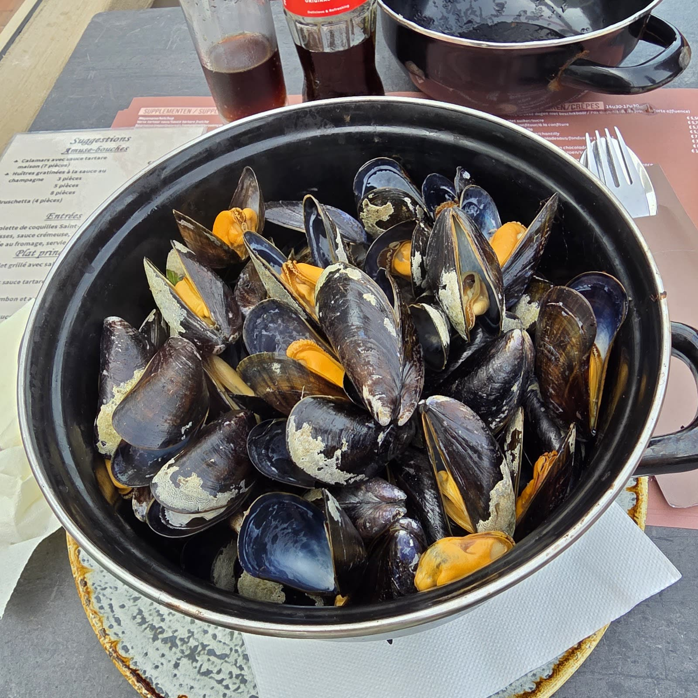
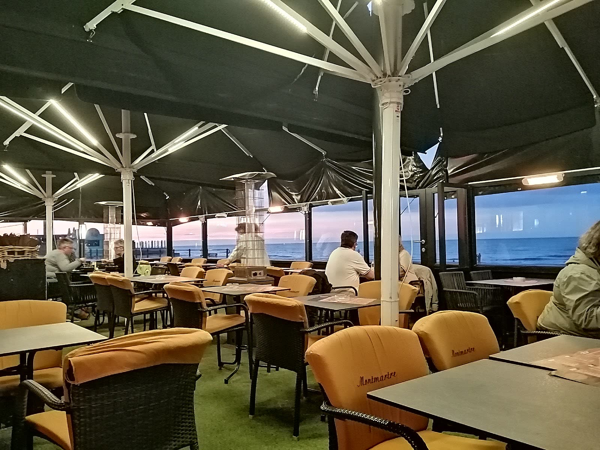
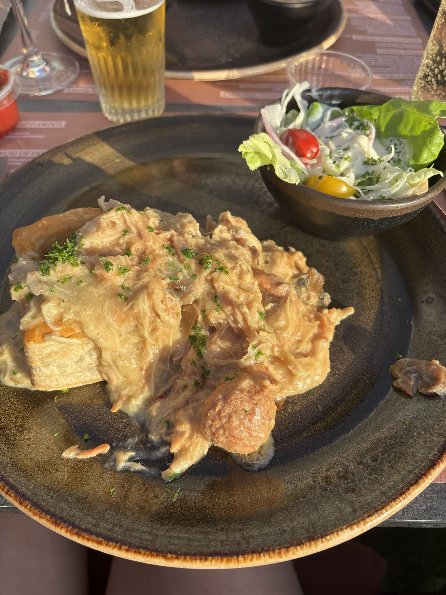
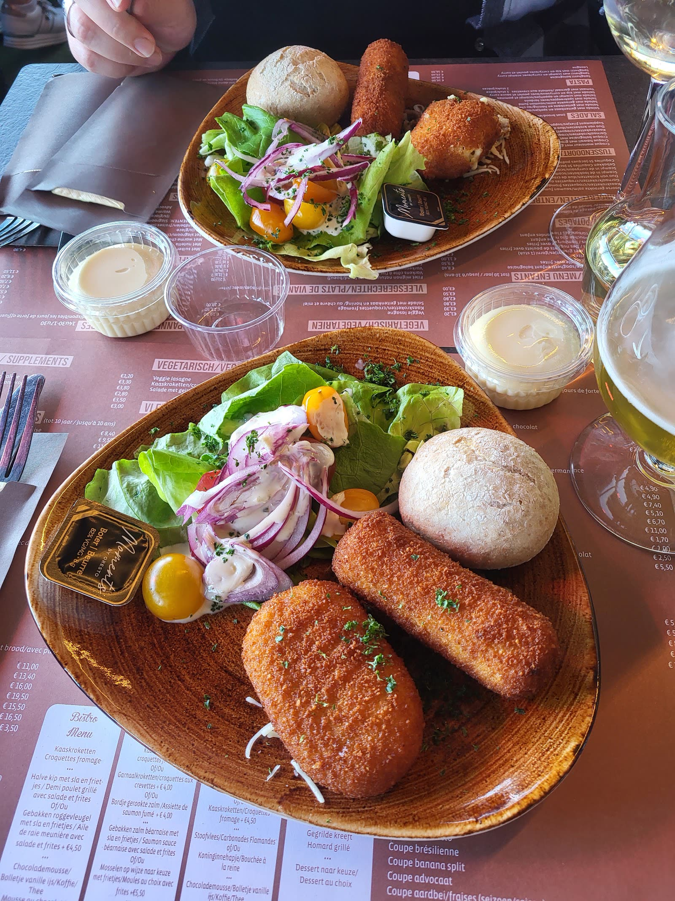
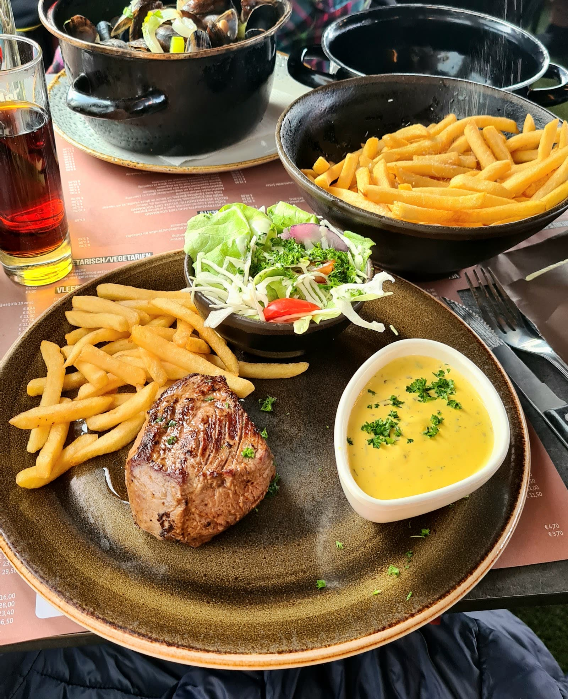
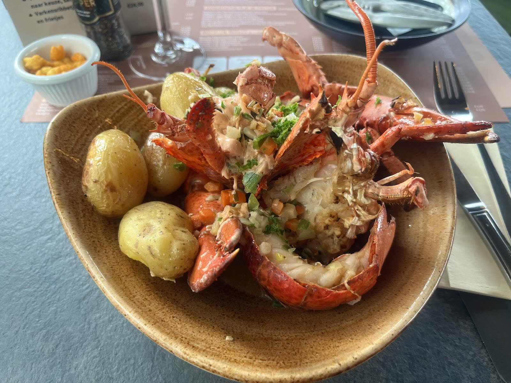
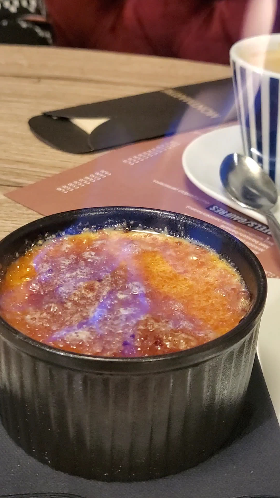
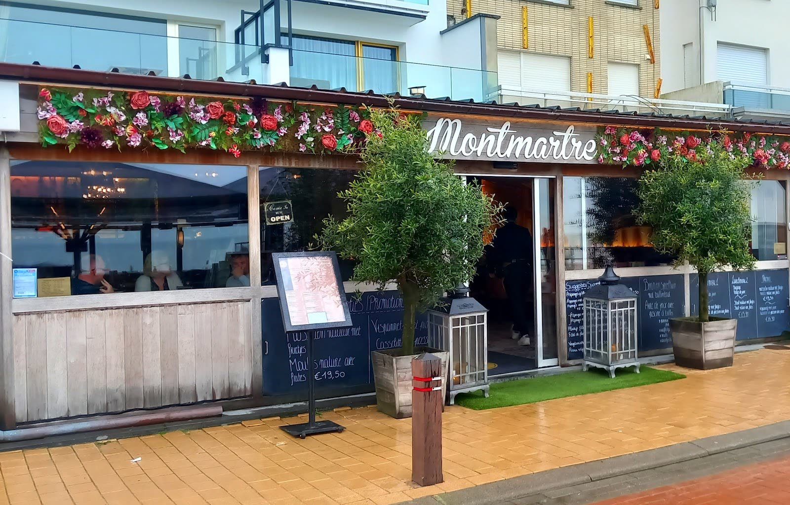

Mosselen
Natuur, met look of in witte wijn. Met frietjes, zoals het hoort.

Brasserie op de Zeedijk van Blankenberge. Verwarmd terras met zicht op zee, een speeltuin voor de kinderen en een kaart van mosselen tot kreeft.
Klassiekers van de kust, elke dag vers. Grote porties, eerlijke prijzen, en bij alles frietjes van het huis.

Natuur, met look of in witte wijn. Met frietjes, zoals het hoort.

Huisbereid, romig en royaal. De favoriet van onze vaste gasten.

Krokant gebakken, met gefrituurde peterselie en citroen.

Gegrild zoals u het wil, met béarnaise of pepersaus en verse salade.

Met groenteboter en krieltjes. Voor de dagen dat het feest mag zijn.

Om te eindigen: gekaramelliseerd, nog lauw.
Ook pannenkoeken, salades, stoofvlees, visschotels en een kindermenu.Vraag naar de suggesties van de dag.



Op het terras zit u recht tegenover het strand. Bij frisse dagen staan de verwarmers aan; binnen wacht het vernieuwde interieur met de bar.
“De kaart is heel gevarieerd met voor elk wat wils. Het onthaal was heel vriendelijk en spontaan. Vol-au-vent met frietjes, een Poes erbij: snel bediend en de porties zijn groot. Zeker een aanrader.”
“Een mooie binnenspeeltuin voor jonge kindjes, gratis lolly bij het drinken, de wachttijd is super snel. Eten is lekker en een zeer mooie prijs voor wat u krijgt. Wij komen volgende keer nog eens terug.”
“Aanrader: vriendelijke bediening en eerlijke prijzen. Beste plek in Blankenberge om te eten.”
Zeedijk 157, 8370 Blankenberge
050 41 38 92
Geen reservatie nodig voor kleine groepen. Bel even voor 6 personen of meer.